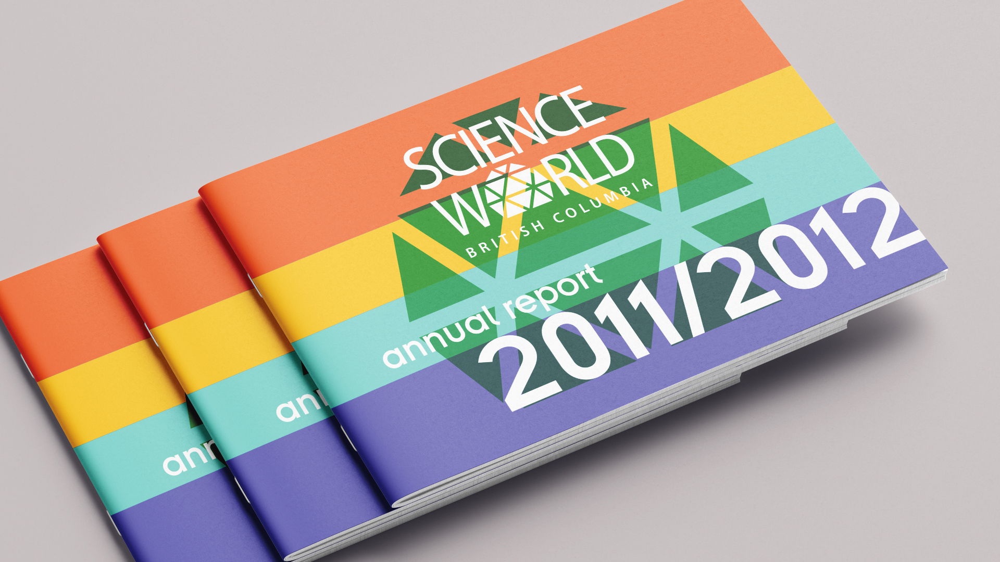
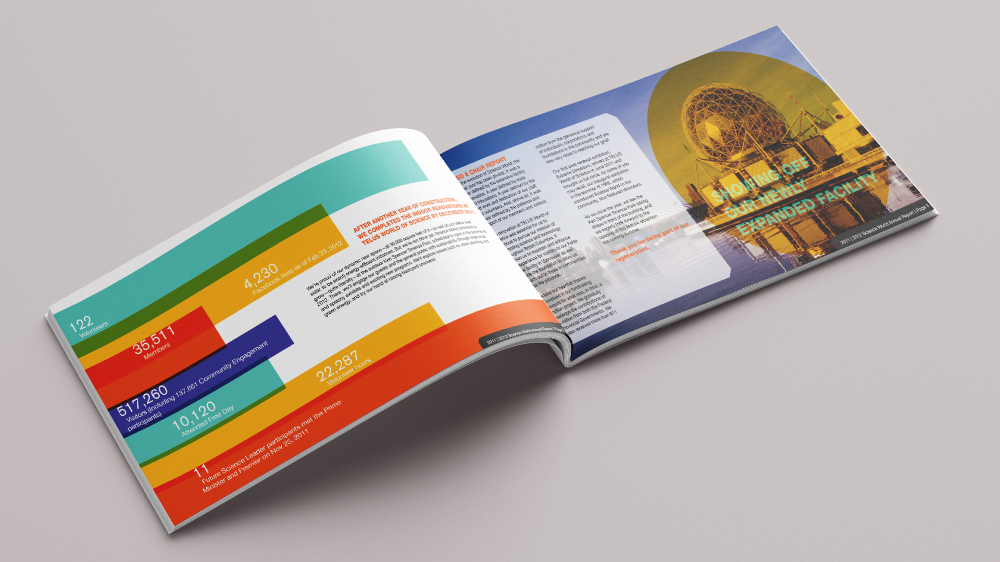
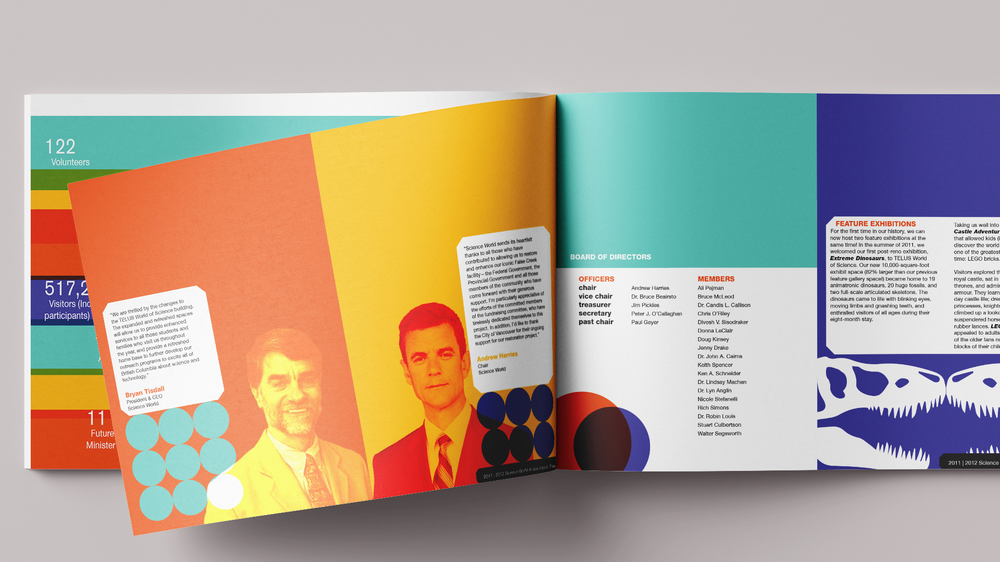
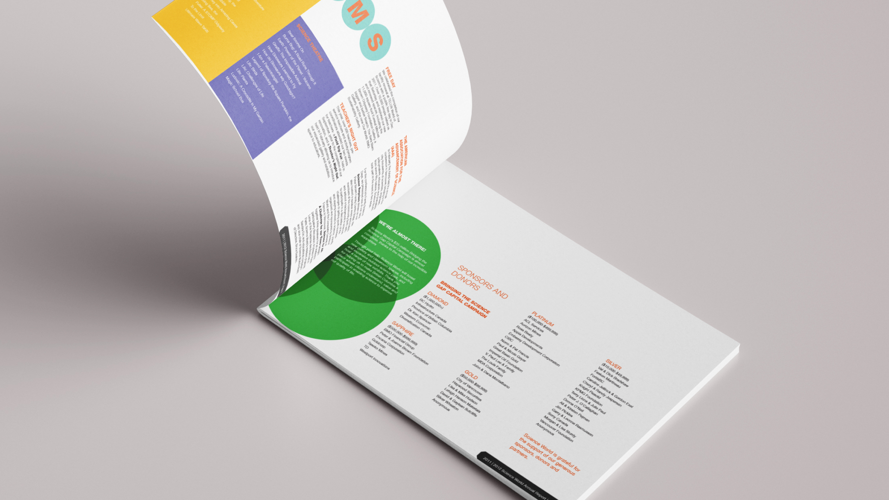
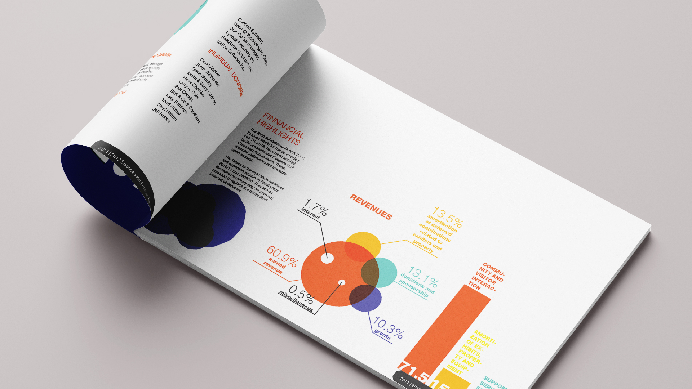
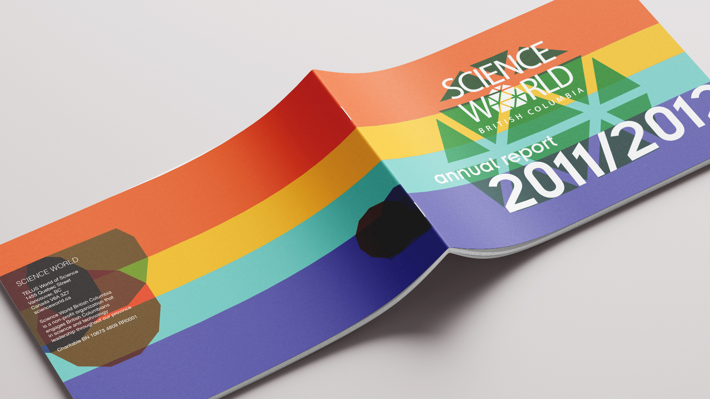

Telus Science World is a science museum and convention center located in downtown Vancouver. In mid-2012, the museum underwent a large-scale renovation.
The objective of this project was to create an annual report so that Science World shareholders would be informed about the future, present and past of the museum.
The annual report's aesthetic is consistent with that of Science World, that is, fun, colorful and educational, but without losing seriousness and professionalism.